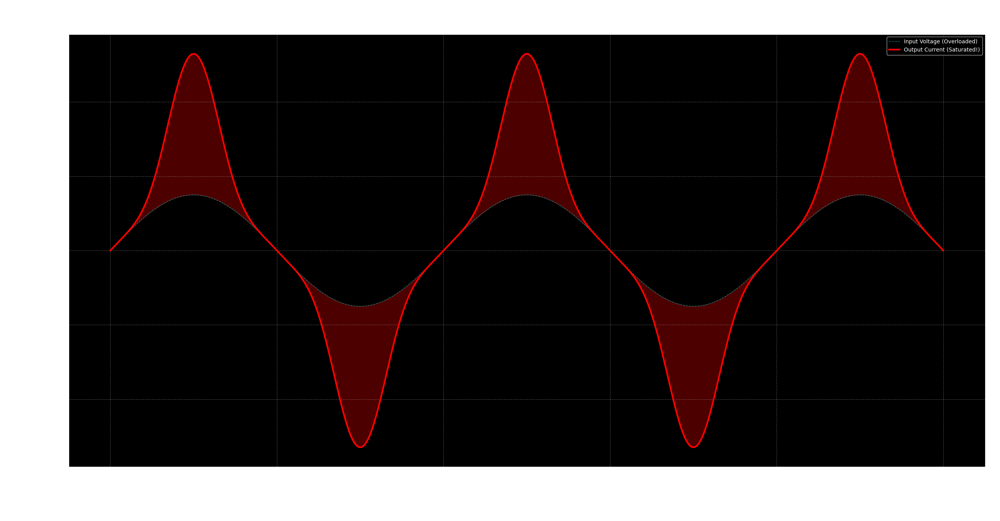
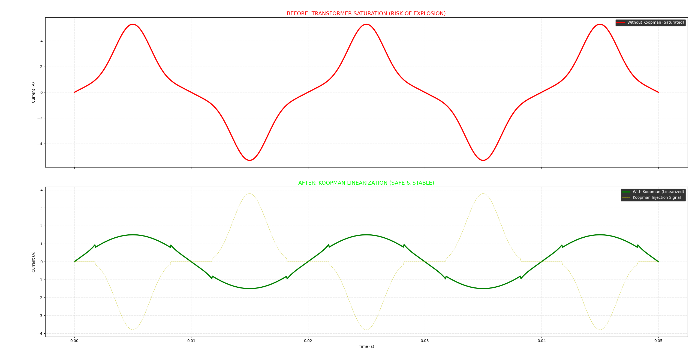

Magnetic saturation is the silent killer of power grids. When a transformer's core hits its magnetic limit, it stops acting like a transformer and starts acting like a short circuit.
Traditional engineering solves this by throwing more money at the problem: bigger cores, heavier copper, and massive "safety margins." But in the age of Microgrids and unpredictable loads, size is not the solution. Intelligence is.
1. The Problem: The Red Spikes of Death
We pushed a standard transformer simulation to 150% load. The result is what we call the "Shark Fin" of destruction. The core saturates, current spikes uncontrollably, and energy is lost as pure heat.

2. The Solution: Koopman Linearization
Bangsaen AI does not use PID. We use Koopman Operator Theory to lift the non-linear dynamics of the saturating core into a linear infinite-dimensional space.
This allows us to predict the saturation spike before it happens and inject a precise counter-signal (the yellow dashed line below).

"We turned a saturating iron core into a linear component purely through software. This means you can use smaller, cheaper transformers to handle larger, more volatile loads."
Don't upgrade the steel.
Upgrade the brain.
Why buy heavier transformers when you can make your existing ones smarter?
Deploy Digital Twin
Want to see how this algorithm runs on your specific transformer specs?
Request Simulation Demo